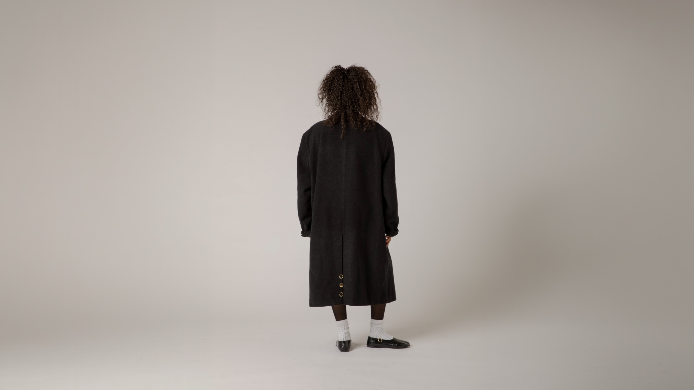
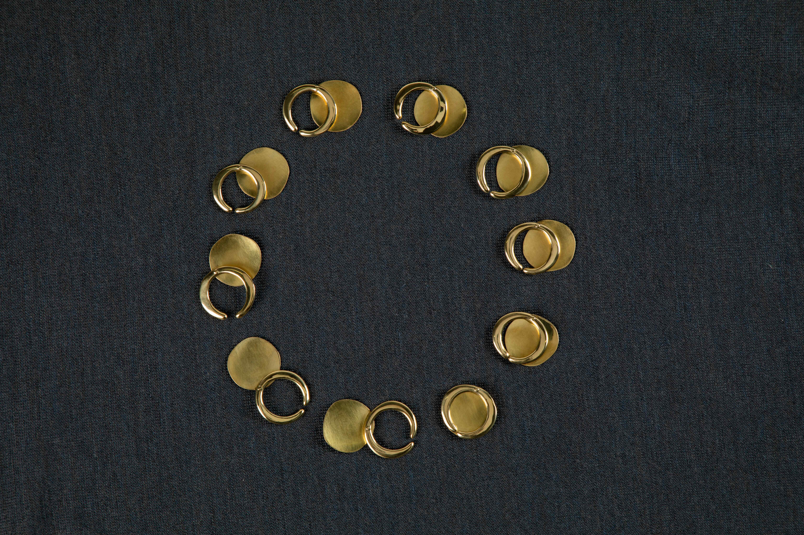

A mission / 2026 / brass
A pendant, a clip, a ring and more.
The story goes as follows…
‘ONE rainy summer day, as I was resting by the shore of loch ness, quite
glad for some fresh air for I had been submerged far too long, a great big
hand appeared. It came raking through the neighbouring pebbles until it
seized me at once ….’
Long story short, design inspired by a pebble found on the shore of loch
ness.
Full story available on request.